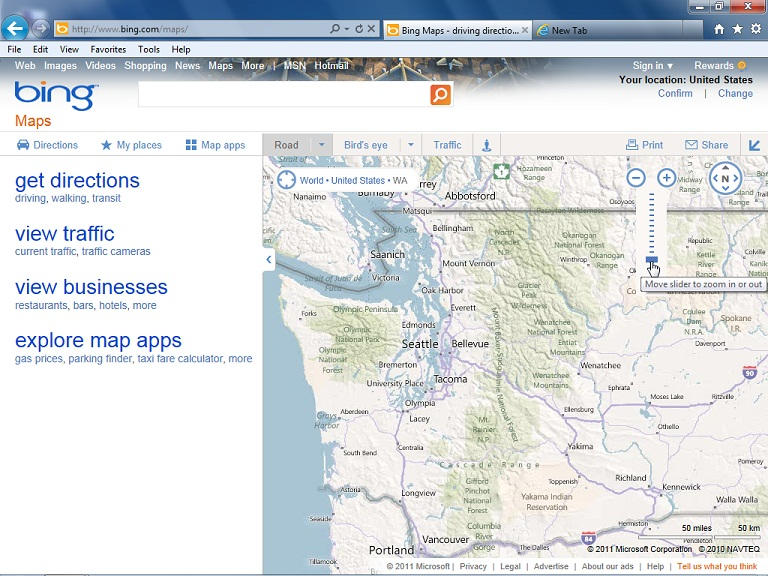

HISTORIA DE HTML5
HTML4, que se dio por cerrado en 1998, es el lenguaje de markup que conforma la base de la gran mayoría de las páginas web que podemos ver a día de hoy. Los diseñadores y desarrolladores web han estado utilizando la especificación HTML 4.01 durante bastantes años de manera satisfactoria, combinándola con CSS para la definición de estilos y con JavaScript para añadir interactividad a los contenidos.
Tras la finalización de HTML 4.0.1, el W3C continuó sus trabajos en consonancia con la evolución de la web, y comenzó con un lenguaje llamado XHTML 1.0. Existe una pequeña diferencia entre HTML 4.0.1 y XHTML 1.0 (XHTML es un lenguaje más estricto: por ejemplo, todas las etiquetas deben indicarse en minúsculas). Uno de los objetivos de XHTML 1.0 era crear un lenguaje de markup que pudiera extenderse y resolver las necesidades de las tecnologías futuras, por ejemplo para los dispositivos móviles. Muchos sitios web se han creado utilizando XHTML 1.0 como marco de desarrollo y muchos diseñadores y desarrolladores valoran positivamente sus reglas sintácticas más estrictas.
A la adopción y difusión de XHTML 1.0, se empezó con el desarrollo de otro lenguaje, XHTML 2.0, que añadía una serie de novedades de gran interés a las páginas web y que se apoyaba de forma notoria en XML. No obstante, este nuevo lenguaje adolecía de diversos problemas de tipo técnico y no resolvía adecuadamente las necesidades reales de los desarrolladores.
En 2004, un grupo de representantes de los principales fabricantes de navegadores y un grupo de trabajo de desarrolladores web formaron un grupo independiente llamado WHATWG (iniciales de Web Hypertext Application Technology Working Group). Su misión consistía en crear una especificación de lenguaje HTML mejor, orientada a crear un nuevo tipo de aplicaciones web pero manteniendo la compatibilidad con las versiones en activo de los navegadores existentes.
Durante unos dos años y medio el W3C y el grupo WHATWG trabajaron en paralelo y de manera independiente hasta que en 2006, Tim Berners-Lee, creador de la World Wide Web y fundador del W3C anunció que el W3C y WHATWG trabajarían juntos en la elaboración del estándar.
Como resultado de todo ello, se abandonó el desarrollo de XHTML 2.0 y la especificación HTML 4.0 se reformó con el nombre HTML5. No obstante, conviene recordar que HTML5 empezó siendo Web Applications 1.0, y eso nos da una pista muy clara para entender para qué fue diseñado realmente HTML5.
Gracias a que el W3C tomó el liderazgo para el desarrollo de HTML5, ahora los desarrolladores tenemos la garantía de que HTML5 será realmente un estándar gratuito y con las suficientes garantías de no incurrir en problemas de propiedad intelectual.
HTML5 Extiende la definición de lo que puede
hacer una página web

A día de hoy HTML no tiene capacidad
para reproducir contenidos multimedia,
como audio o vídeo, sin un complemento
un "plug-in") como los de Adobe® Flash®
o Microsoft® Silverlight®.
Los gráficos y animaciones se ofrecen
Los gráficos y animaciones se ofrecen
en estos momentos en forma de archivos
de imágenes o con la ayuda de otros
complementos(Adobe Flash, Java,
Microsoft Silverlight u otros).
Esta demanda de los usuarios en favor de un mayor rendimiento y unos sitios web con prestaciones más avanzadas y completas se ve limitada por el lenguaje HTML que se utiliza actualmente.
Un sitio como Bing™ Maps es una aplicación web de altas prestaciones que podría beneficiarse de las nuevas funcionalidades que incorpora HTML5
En los apartados siguientes vamos a explicar brevemente algunos de los aspectos más importantes de HTML5.